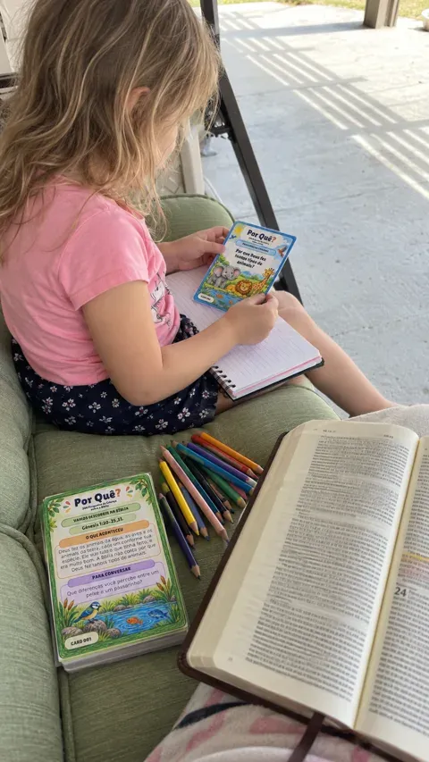
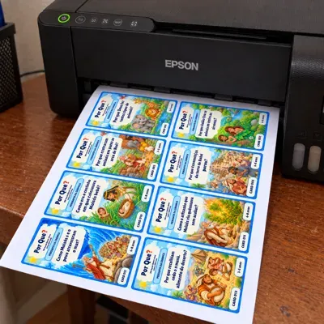
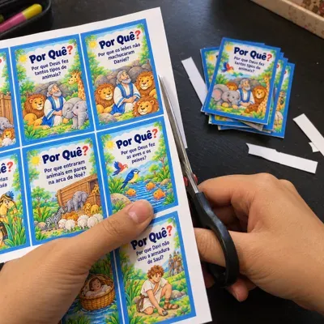
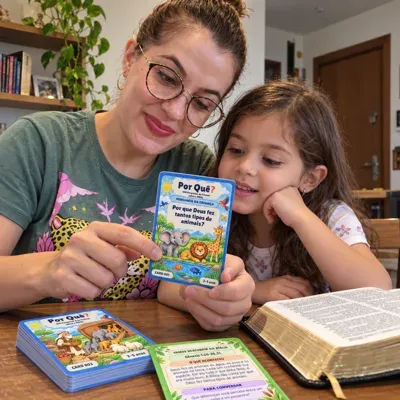

200 Perguntas de Criança sobre a Bíblia
Desperte no seu filho a vontade de descobrir a Bíblia.
Mostre uma pergunta. Deixe seu filho imaginar a resposta. Virem o card e descubram o episódio na Bíblia. 200 cards prontos para imprimir + 3 bônus para levar esse momento à rotina.
QUERO CONHECER O BARALHOFrente e verso · PDF para imprimir
PERGUNTA NA FRENTEDESCOBERTA NO VERSOREFERÊNCIA BÍBLICA EM CADA CARD
Qual ele escolheria primeiro?
Qual dessas perguntas faria seu filho querer descobrir a resposta?
Você apresenta o desafio. A curiosidade dá o primeiro passo.
Por que os pastores correram para ver Jesus bebê?
Como Moisés e o povo atravessaram o mar?
Veja um card completoEle escolhe a pergunta.
Ele escolhe a pergunta.
Vocês descobrem a história.
Deixe seu filho contar o que imagina. O verso apresenta o episódio, mostra onde encontrá-lo na Bíblia e traz uma proposta para continuar a conversa.
É isso que você recebeUma descoberta pronta
Uma descoberta pronta
sempre que vocês quiserem.
- 200 cards frente e verso em PDF para imprimir.
- Linguagem acessível para explorar os episódios com as crianças.
- Referências bíblicas para consultar o texto juntos.
- “Para conversar” para ouvir as ideias do seu filho.
3–5 anosLeia com os pequenos.
6–8 anosExplorem as histórias juntos.
9–12 anosIncentive novas perguntas.

Explore o material de pertoVeja de perto.
Veja de perto.
Escolha por onde começariam.
Imprima. Recorte. Escolham a primeira carta.

1
Imprima o PDF
Siga as orientações do arquivo para alinhar frente e verso.

2
Recorte os cards
Deixe o baralho à mão para usar e reutilizar.

3
Comecem com um
Leiam a pergunta e o verso. Consultem a passagem e conversem.
Você também recebe 3 bônusAlém dos cards, 3 bônus
Além dos cards, 3 bônus
para momentos que vocês já vivem.
BÔNUS 1
Boa Noite com Deus
O dia foi corrido. Mas vocês ainda podem ter um momento só de vocês.
Na correria, o dia termina e aquele momento com seu filho fica para amanhã.
30 momentos com história bíblica e oração para ler juntos antes de dormir. Abra e tenha por onde começar.
BÔNUS 2
Pequenas Orações, Grandes Sentimentos
“Estou com medo, mamãe.” Como ajudar seu filho a colocar em palavras o que sente?
Quando faltam palavras para explicar o medo, a tristeza ou a raiva, você pode ajudar a conversa a começar.
Cartões com sugestões de oração em linguagem infantil para acolher o que seu filho sente e orar juntos — também nos momentos de gratidão.
BÔNUS 3
Valores da Bíblia na Vida Real
Você já falou para dividir, dizer a verdade e pedir desculpas. Mas como ensinar isso na prática?
A orientação já foi dada. Agora, ofereça uma situação para entender e uma atitude para experimentar.
Histórias do cotidiano + passagem bíblica + proposta prática para trabalhar generosidade, honestidade, perdão e cuidado com o outro.
O kit completo para sua famíliaQuero meu baralho + 3 bônus →
Por Quê?
200 Perguntas de Criança sobre a Bíblia
- 200 cards bíblicos com pergunta, explicação e referência.
- Boa Noite com Deus: 30 histórias e orações para o fim do dia.
- Pequenas Orações, Grandes Sentimentos: cartões de oração.
- Valores da Bíblia na Vida Real: histórias com propostas práticas.
- Material digital em PDF para imprimir e reutilizar.
Leve os 200 cards + os 3 bônus por
6x de R$ 6,94
ou R$ 37,00 à vista
Antes de escolher
a primeira carta...
É um baralho físico ou digital?
É um arquivo digital em PDF com 200 cards, frente e verso. Você imprime, recorta e reutiliza. Não há envio de baralho físico.
Preciso conhecer muito a Bíblia?
Você não precisa saber todas as respostas de memória. Cada card traz uma explicação do episódio e a referência para consultar a passagem com a criança.
E se meu filho ainda não souber ler?
Leia o card em voz alta e acompanhe a conversa. Os cards indicam as faixas de 3–5, 6–8 e 9–12 anos; escolha conforme a compreensão da criança.
Preciso separar muito tempo para usar?
Comece com um card, sem obrigação de seguir um calendário ou terminar vários. A preparação inicial é imprimir e recortar; as perguntas e explicações já estão no material.
Meu filho já aprende sobre a Bíblia na igreja. Serve para ele?
O baralho pode complementar esse aprendizado em casa, com perguntas para explorar no ritmo da criança e da família.
Como faço a impressão?
Siga as orientações incluídas no PDF para tamanho e alinhamento da frente e do verso. Depois, recorte as cartas. Você pode imprimir em casa ou em uma gráfica.
As explicações substituem a leitura da Bíblia?
Os cards apresentam os episódios em linguagem acessível e indicam as passagens para consultar o texto bíblico. Quando a passagem não explica um motivo, o material sinaliza esse limite.
No próximo momento juntos,
já tenham por onde começar.
Na hora de dormir ou numa pausa do dia: escolham uma pergunta, abram a Bíblia e escutem o que seu filho tem a dizer.
Quero meu kit por 6x de R$ 6,94 →